Last updated: 2019-04-25
Checks: 5 1
Knit directory: Comparative_eQTL/analysis/
This reproducible R Markdown analysis was created with workflowr (version 1.2.0). The Report tab describes the reproducibility checks that were applied when the results were created. The Past versions tab lists the development history.
The R Markdown file has unstaged changes. To know which version of the R Markdown file created these results, you’ll want to first commit it to the Git repo. If you’re still working on the analysis, you can ignore this warning. When you’re finished, you can run wflow_publish to commit the R Markdown file and build the HTML.
Great job! The global environment was empty. Objects defined in the global environment can affect the analysis in your R Markdown file in unknown ways. For reproduciblity it’s best to always run the code in an empty environment.
The command set.seed(20190319) was run prior to running the code in the R Markdown file. Setting a seed ensures that any results that rely on randomness, e.g. subsampling or permutations, are reproducible.
Great job! Recording the operating system, R version, and package versions is critical for reproducibility.
Nice! There were no cached chunks for this analysis, so you can be confident that you successfully produced the results during this run.
Great! You are using Git for version control. Tracking code development and connecting the code version to the results is critical for reproducibility. The version displayed above was the version of the Git repository at the time these results were generated.
Note that you need to be careful to ensure that all relevant files for the analysis have been committed to Git prior to generating the results (you can use wflow_publish or wflow_git_commit). workflowr only checks the R Markdown file, but you know if there are other scripts or data files that it depends on. Below is the status of the Git repository when the results were generated:
Ignored files:
Ignored: .DS_Store
Ignored: .Rhistory
Ignored: .Rproj.user/
Untracked files:
Untracked: analysis/20190327_MakeCovariateFiles.Rmd
Untracked: analysis/20190421_RegressOutRNASeqPCs.Rmd
Untracked: docs/figure/20190424_Check_eQTLs.Rmd/
Unstaged changes:
Modified: analysis/20190412_Check_eQTLs.Rmd
Modified: analysis/index.Rmd
Note that any generated files, e.g. HTML, png, CSS, etc., are not included in this status report because it is ok for generated content to have uncommitted changes.
These are the previous versions of the R Markdown and HTML files. If you’ve configured a remote Git repository (see ?wflow_git_remote), click on the hyperlinks in the table below to view them.
| File | Version | Author | Date | Message |
|---|---|---|---|---|
| Rmd | 4c2b69f | Benjmain Fair | 2019-04-19 | a messy commit |
library(tidyverse)
library(knitr)
library(data.table)My first pass at eqtl mapping was as follows: Genotypes filtered for MAF>0.5 & GenotypingRate>0.9. ~10.5M variants passed this filter. Gene expression as log(TPM), filtering for genes with >0 TPM in all samples (~17,500 genes passed this filter). Association testing used the following linear mixed model for each cis-variant-gene-pair (cis definied as <1Mb from gene):
\[ Y =Wα+xβ+u+ε \]
where \(Y\) is gene expression as \(log(TPM)\), \(W\) covariates include first three genotype principal components (to account for population structure) as well as 3 RNA-seq PCs, Sex, and an intercept. \(x\) is coded as 0,1,2, \(U \sim MVN(0,\sigma^2 K)\) where \(K\) a the kinship matrix calculated by KING-robust and negative cells are thresholded at 0 (This results in a symetric positive definite matrix). This wqs implemented in the R package ‘MatrixEQTL’. This resulted in ~7000 eSNP-gene pairs, across ~350eGenes at FDR<0.1 (Benjamini Hodgeberg correction).
Here I want to check that the results of this analysis are reasonable, starting by checking boxplots of gene expression stratified by genotype for a handful of significant eSNP-gene pairs.
# Read in genotypes for eQTLs
Genotypes <- read.table("../data/20190410_eqtls.sig_genotypes.raw", header=T, check.names = F)
# Genotypes[!duplicated(as.list(Genotypes))]
kable(Genotypes[1:10,1:10])| FID | IID | PAT | MAT | SEX | PHENOTYPE | 1:8120561:TATGAAGATCA:T_T | 1:12231268:G:A_A | 1:12260345:TCC:TG_TG | 1:12289164:CATCAACTG:GGGCCAC_GGGCCAC |
|---|---|---|---|---|---|---|---|---|---|
| 295 | Pan_troglodytes_ThisStudy | 0 | 0 | 0 | -0.502512 | 0 | 0 | 1 | 1 |
| 317 | Pan_troglodytes_ThisStudy | 0 | 0 | 0 | -0.933389 | 0 | 1 | 1 | 1 |
| 338 | Pan_troglodytes_ThisStudy | 0 | 0 | 0 | -1.082890 | 0 | 0 | 1 | 1 |
| 389 | Pan_troglodytes_ThisStudy | 0 | 0 | 0 | -0.779304 | 0 | 0 | 1 | 1 |
| 438 | Pan_troglodytes_ThisStudy | 0 | 0 | 0 | -0.871399 | 0 | 0 | 1 | 1 |
| 456 | Pan_troglodytes_ThisStudy | 0 | 0 | 0 | -0.515976 | 0 | 0 | 1 | 1 |
| 462 | Pan_troglodytes_ThisStudy | 0 | 0 | 0 | -0.674267 | 0 | 0 | 1 | 1 |
| 476 | Pan_troglodytes_ThisStudy | 0 | 0 | 0 | -1.087490 | 1 | 0 | 1 | 1 |
| 495 | Pan_troglodytes_ThisStudy | 0 | 0 | 0 | 0.220741 | 0 | 0 | 1 | 1 |
| 4x0025 | Pan_troglodytes_ThisStudy | 0 | 0 | 0 | -0.796774 | 0 | 0 | 1 | 1 |
#Make sure there aren't duplicate columns
length(colnames(Genotypes))[1] 6619length(unique(colnames(Genotypes)))[1] 6619# Read in eQTLs from MatrixEQTL output (already filtered for FDR<0.1)
eQTLs <- read.table("../data/20190410_eqtls.txt", header=T)
kable(head(eQTLs))| SNP | gene | beta | t.stat | p.value | FDR |
|---|---|---|---|---|---|
| 1:223660942:GTGTTTATTTTAATATTGAG:GTGT | ENSPTRT00000096266.1 | 19.030028 | 35.83869 | 0 | 0 |
| 11:32876022:CTCCATCTC:CTCCATCTCA | ENSPTRT00000006565.4 | -4.833762 | -18.96827 | 0 | 0 |
| 11:32876022:CTCCATCTC:CTCCATCTCA | ENSPTRT00000006565.4 | -4.833762 | -18.96827 | 0 | 0 |
| 17:30190097:CCACGGCCCGCTAAC:CTGCACCTGGCTGAA | ENSPTRT00000084268.1 | 16.315581 | 14.89672 | 0 | 0 |
| 17:30191958:GGCAC:AGCGT | ENSPTRT00000084268.1 | 16.315581 | 14.89672 | 0 | 0 |
| 15:65870468:C:T | ENSPTRT00000013635.7 | 8.335836 | 14.76090 | 0 | 0 |
# Read in phenotypes, from count table
CountTable <- read.table(gzfile('../output/CountTable.tpm.txt.gz'), header=T, check.names=FALSE, row.names = 1) %>%
t() %>%
as.data.frame() %>%
rownames_to_column(var = "FID")
kable(CountTable[1:10, 1:10])| FID | ENSPTRT00000098376.1 | ENSPTRT00000091526.1 | ENSPTRT00000091354.1 | ENSPTRT00000080032.1 | ENSPTRT00000096913.1 | ENSPTRT00000079752.1 | ENSPTRT00000089496.1 | ENSPTRT00000077419.1 | ENSPTRT00000090315.1 |
|---|---|---|---|---|---|---|---|---|---|
| 4X0095 | 0.0377317 | 0.0000000 | 0 | 0.000000 | 0.0781316 | 0.0873579 | 0.000000 | 0.0000000 | 0.000000 |
| 4X0212 | 0.2722200 | 0.0000000 | 0 | 0.000000 | 0.0000000 | 0.2363460 | 0.000000 | 0.0000000 | 0.000000 |
| 4X0267 | 0.2832680 | 0.0000000 | 0 | 0.000000 | 0.0000000 | 0.0000000 | 0.000000 | 0.0000000 | 0.000000 |
| 4X0333 | 0.0768681 | 0.0000000 | 0 | 0.000000 | 0.0000000 | 0.0000000 | 0.000000 | 0.0000000 | 0.000000 |
| 4X0339 | 0.0241551 | 0.0279624 | 0 | 0.000000 | 0.0000000 | 0.0000000 | 0.000000 | 0.0676831 | 0.000000 |
| 4X0354 | 0.4893560 | 0.0000000 | 0 | 0.000000 | 0.0000000 | 0.0000000 | 0.000000 | 0.0000000 | 0.000000 |
| 4X0357 | 0.1495150 | 0.0000000 | 0 | 0.000000 | 0.0000000 | 0.0000000 | 0.000000 | 0.0000000 | 0.000000 |
| 4X0550 | 0.0338373 | 0.0000000 | 0 | 0.000000 | 0.0000000 | 0.0000000 | 0.000000 | 0.0000000 | 0.000000 |
| 4x0025 | 0.1593970 | 0.0000000 | 0 | 0.000000 | 0.0000000 | 0.0000000 | 0.176351 | 0.0000000 | 0.208957 |
| 4x0043 | 0.2715600 | 0.0000000 | 0 | 0.126819 | 0.0937206 | 0.7335140 | 0.000000 | 0.1268190 | 0.889987 |
MergedData <- left_join(Genotypes, CountTable, by="FID")Warning: Column `FID` joining factor and character vector, coercing into
character vector#eqtls, ordered from most significant at top
kable(head(eQTLs))| SNP | gene | beta | t.stat | p.value | FDR |
|---|---|---|---|---|---|
| 1:223660942:GTGTTTATTTTAATATTGAG:GTGT | ENSPTRT00000096266.1 | 19.030028 | 35.83869 | 0 | 0 |
| 11:32876022:CTCCATCTC:CTCCATCTCA | ENSPTRT00000006565.4 | -4.833762 | -18.96827 | 0 | 0 |
| 11:32876022:CTCCATCTC:CTCCATCTCA | ENSPTRT00000006565.4 | -4.833762 | -18.96827 | 0 | 0 |
| 17:30190097:CCACGGCCCGCTAAC:CTGCACCTGGCTGAA | ENSPTRT00000084268.1 | 16.315581 | 14.89672 | 0 | 0 |
| 17:30191958:GGCAC:AGCGT | ENSPTRT00000084268.1 | 16.315581 | 14.89672 | 0 | 0 |
| 15:65870468:C:T | ENSPTRT00000013635.7 | 8.335836 | 14.76090 | 0 | 0 |
# 7682 eQTLs at FDR<0.1
dim(eQTLs)[1] 7682 6# betas for these
hist(eQTLs$beta)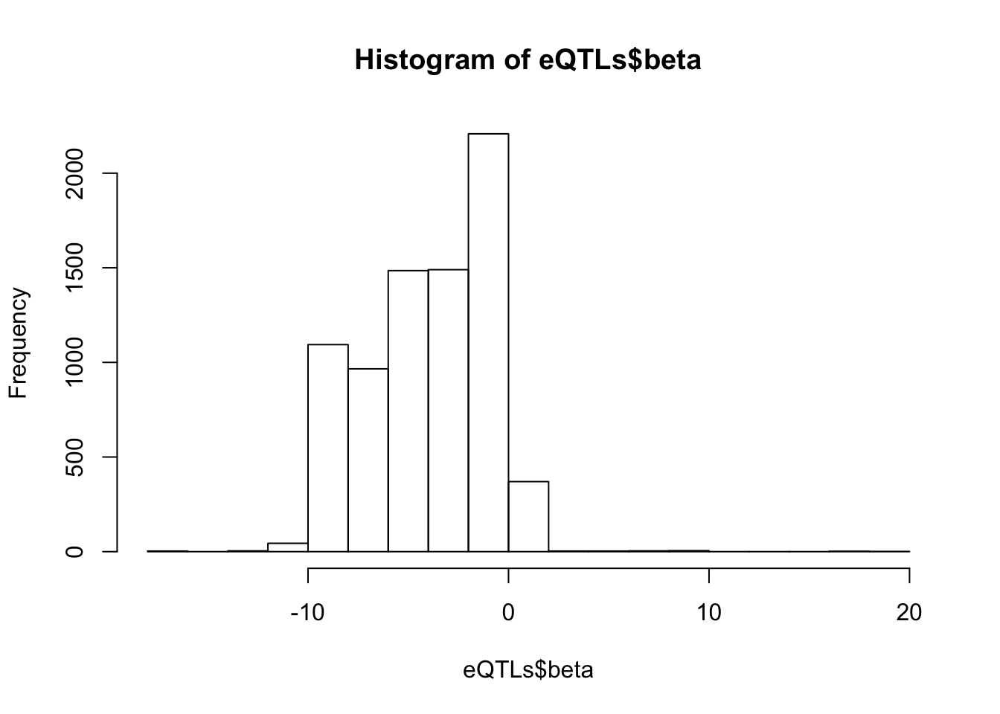
# Expression box plot, stratified by genotype. For a fe of top of the list snp-gene pairs (most significant)
data.frame(Genotype = MergedData$`1:223660942:GTGTTTATTTTAATATTGAG:GTGT`,
Phenotype = MergedData$ENSPTRT00000096266.1,
FID=MergedData$FID) %>%
ggplot(aes(x=factor(Genotype), y=Phenotype, label=FID)) +
geom_boxplot(outlier.shape = NA) +
geom_text(position=position_jitter(width=0.25), alpha=1, size=2) +
scale_y_continuous(name="TPM", trans="log10")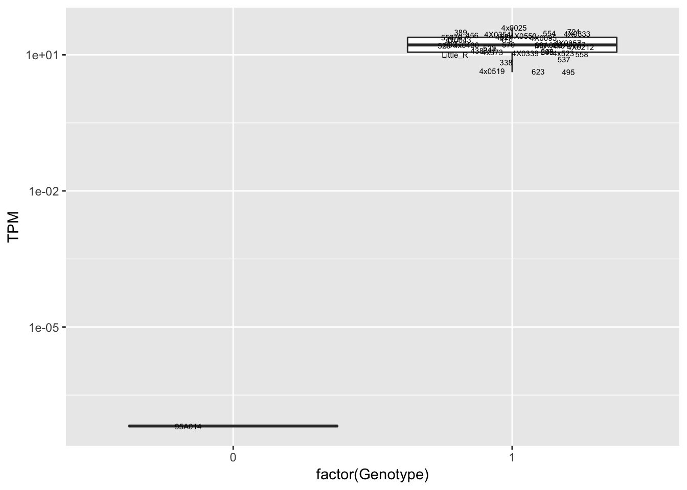
data.frame(Genotype = MergedData$`17:30190097:CCACGGCCCGCTAAC:CTGCACCTGGCTGAA`,
Phenotype = MergedData$ENSPTRT00000084268.1,
FID=MergedData$FID) %>%
ggplot(aes(x=factor(Genotype), y=Phenotype, label=FID)) +
geom_boxplot(outlier.shape = NA) +
geom_text(position=position_jitter(width=0.25), alpha=1, size=2) +
scale_y_continuous(name="TPM", trans="log10")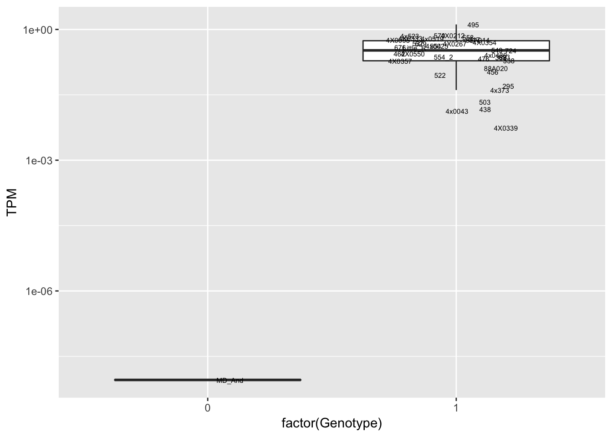
data.frame(Genotype = MergedData$`15:65870468:C:T`,
Phenotype = MergedData$ENSPTRT00000013635.7,
FID=MergedData$FID) %>%
ggplot(aes(x=factor(Genotype), y=Phenotype, label=FID)) +
geom_boxplot(outlier.shape = NA) +
geom_text(position=position_jitter(width=0.25), alpha=1, size=2) +
scale_y_continuous(name="TPM", trans="log10")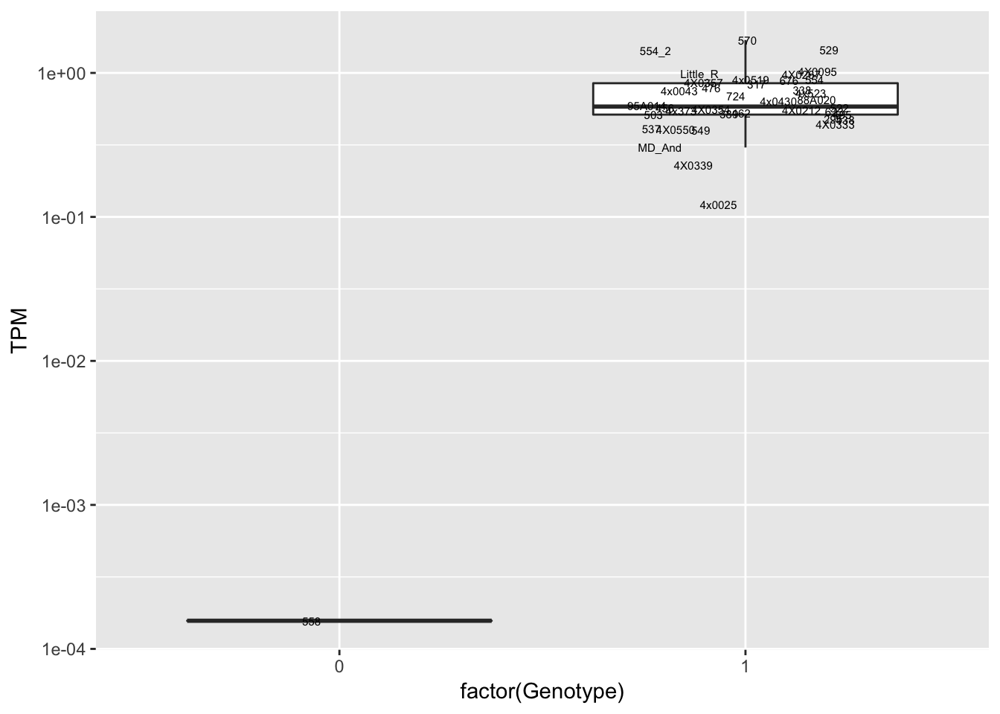 Interpretation: This is concerning; these top hits seem to be all false positives, probably driven by genotyping errors as evidenced by a huge excess of heterozygotes. I checked the raw DNA-sequencing at some of these loci (not shown) and there doesn’t seem to be anything obviously wrong with the alignment or variant calling (~50% of non-duplicate, reads without any excess of mismatches and no strand bias indicate a mismatch/true snp at these locations). Paralogous genes can cause mismapping and false positive variant calls at positions like this. Probably the best way to filter them out will be to apply a Hardy-weinberg filter. This positions will deviate from HWE with very extreme Pvals, so applying a very stringent HWE filter (that still allows for some deviation from HWE, as expected because of population substructure and related individuals) may get rid of these problematic genotypes.
Let’s check some randomly sampled eqtls to see if all of the eqtls are like this.
set.seed(80)
RandomSampleOfEqtls <- eQTLs %>% sample_n(10) %>% select(SNP, gene, beta)
kable(RandomSampleOfEqtls)| SNP | gene | beta |
|---|---|---|
| 3:64175024:T:C | ENSPTRT00000097126.1 | -6.5789324 |
| 8:41999256:GCTGTGTTT:G | ENSPTRT00000076576.1 | -0.8351890 |
| 3:50210729:C:T | ENSPTRT00000098400.1 | -1.7838139 |
| 12:65459594:T:G | ENSPTRT00000048028.3 | -2.3928804 |
| 12:65707861:T:C | ENSPTRT00000048028.3 | -1.9414605 |
| 7:145137540:C:T | ENSPTRT00000036621.4 | -5.5667535 |
| 1:131341766:A:C | ENSPTRT00000092453.1 | -0.9729193 |
| 12:66854411:A:G | ENSPTRT00000048028.3 | -1.9414605 |
| 12:64907042:G:A | ENSPTRT00000048028.3 | -1.9414605 |
| 3:157318426:G:A | ENSPTRT00000029000.5 | 1.0544365 |
data.frame(Genotype = MergedData$`1:53393622:A:G`,
Phenotype = MergedData$ENSPTRT00000108879.1,
FID=MergedData$FID) %>%
ggplot(aes(x=factor(Genotype), y=Phenotype, label=FID)) +
geom_boxplot(outlier.shape = NA) +
geom_text(position=position_jitter(width=0.25), alpha=1, size=2) +
scale_y_continuous(name="TPM", trans="log10")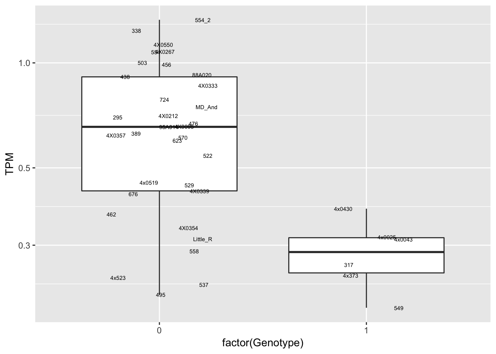
data.frame(Genotype = MergedData$`11:85739664:G:A`,
Phenotype = MergedData$ENSPTRT00000089773.1,
FID=MergedData$FID) %>%
ggplot(aes(x=factor(Genotype), y=Phenotype, label=FID)) +
geom_boxplot(outlier.shape = NA) +
geom_text(position=position_jitter(width=0.25), alpha=1, size=2) +
scale_y_continuous(name="TPM", trans="log10")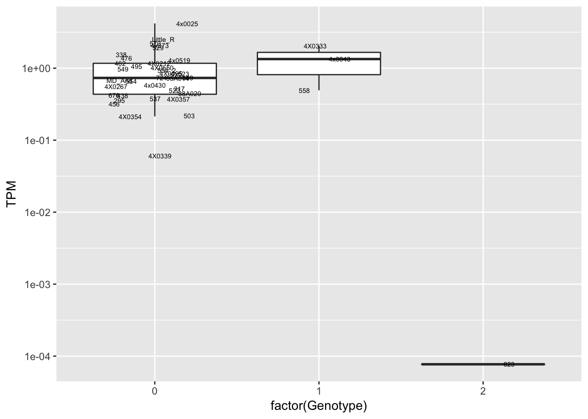
data.frame(Genotype = MergedData$`2A:70424303:C:G`,
Phenotype = MergedData$ENSPTRT00000079798.1,
FID=MergedData$FID) %>%
ggplot(aes(x=factor(Genotype), y=Phenotype, label=FID)) +
geom_boxplot(outlier.shape = NA) +
geom_text(position=position_jitter(width=0.25), alpha=1, size=2) +
scale_y_continuous(name="TPM", trans="log10")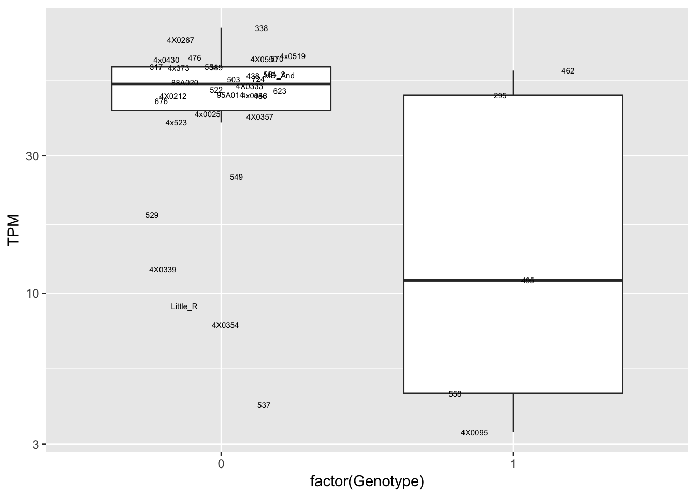
data.frame(Genotype = MergedData$`16:58460835:C:T`,
Phenotype = MergedData$ENSPTRT00000087116.1,
FID=MergedData$FID) %>%
ggplot(aes(x=factor(Genotype), y=Phenotype, label=FID)) +
geom_boxplot(outlier.shape = NA) +
geom_text(position=position_jitter(width=0.25), alpha=1, size=2) +
scale_y_continuous(name="TPM", trans="log10")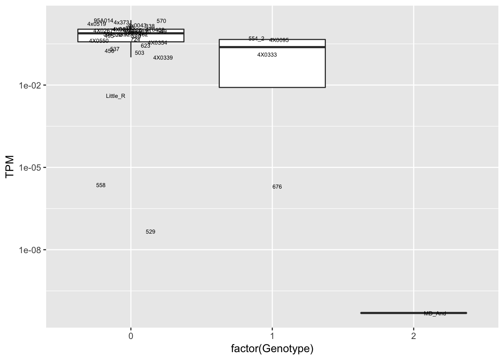
data.frame(Genotype = MergedData$`10:124136336:C:A`,
Phenotype = MergedData$ENSPTRT00000103391.1,
FID=MergedData$FID) %>%
ggplot(aes(x=factor(Genotype), y=Phenotype, label=FID)) +
geom_boxplot(outlier.shape = NA) +
geom_text(position=position_jitter(width=0.25), alpha=1, size=2) +
scale_y_continuous(name="TPM", trans="log10")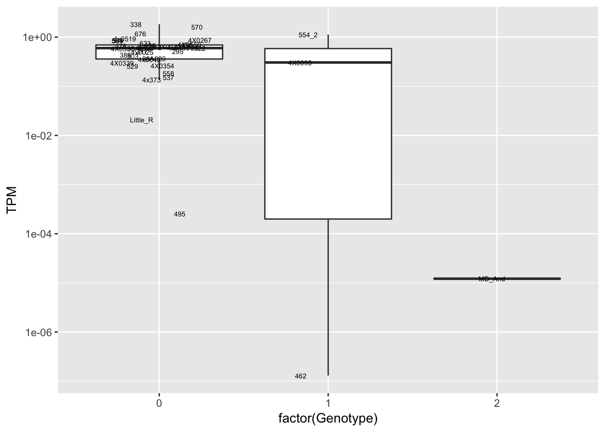
data.frame(Genotype = MergedData$`16:58398631:C:A`,
Phenotype = MergedData$ENSPTRT00000087116.1,
FID=MergedData$FID) %>%
ggplot(aes(x=factor(Genotype), y=Phenotype, label=FID)) +
geom_boxplot(outlier.shape = NA) +
geom_text(position=position_jitter(width=0.25), alpha=1, size=2) +
scale_y_continuous(name="TPM", trans="log10")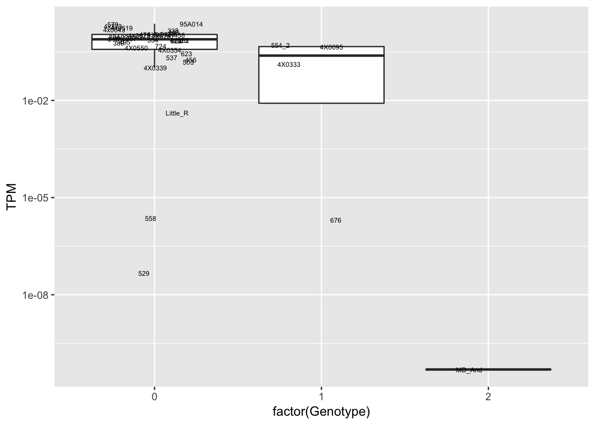
# same gene as previous, snp in LD with previous plot
data.frame(Genotype = MergedData$`16:59259665:G:C`,
Phenotype = MergedData$ENSPTRT00000087116.1,
FID=MergedData$FID) %>%
ggplot(aes(x=factor(Genotype), y=Phenotype, label=FID)) +
geom_boxplot(outlier.shape = NA) +
geom_text(position=position_jitter(width=0.25), alpha=1, size=2) +
scale_y_continuous(name="TPM", trans="log10")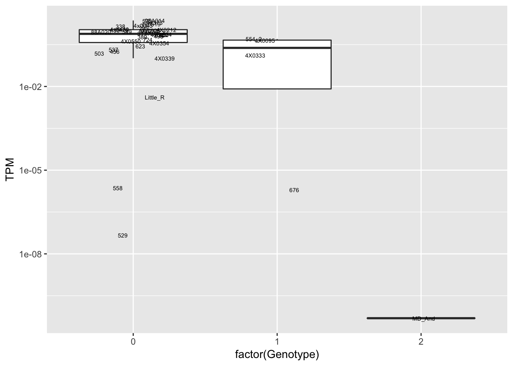
data.frame(Genotype = MergedData$`15:32018636:G:A`,
Phenotype = MergedData$ENSPTRT00000081598.1,
FID=MergedData$FID) %>%
ggplot(aes(x=factor(Genotype), y=Phenotype, label=FID)) +
geom_boxplot(outlier.shape = NA) +
geom_text(position=position_jitter(width=0.25), alpha=1, size=2) +
scale_y_continuous(name="TPM", trans="log10")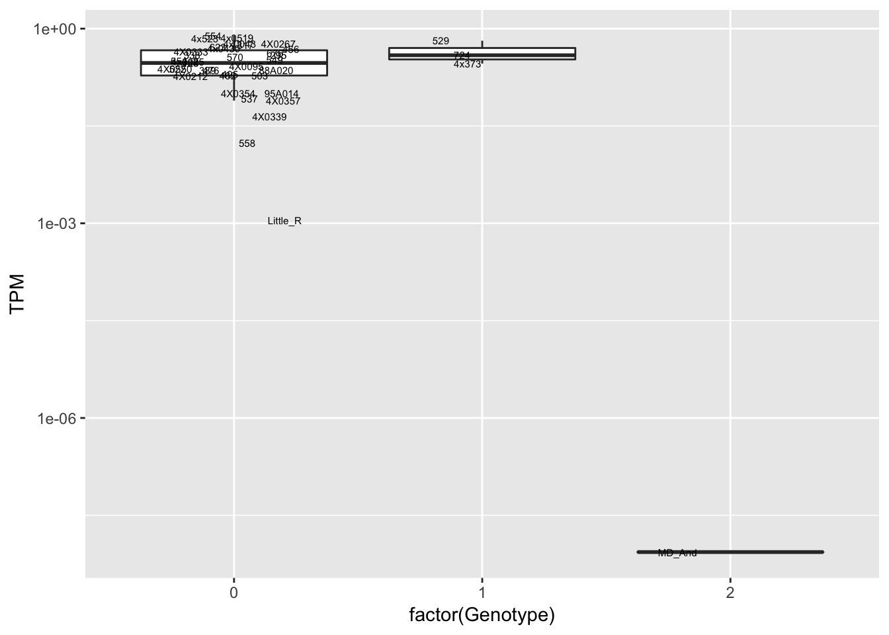
data.frame(Genotype = MergedData$`12:66710269:G:A`,
Phenotype = MergedData$ENSPTRT00000048028.3,
FID=MergedData$FID) %>%
ggplot(aes(x=factor(Genotype), y=Phenotype, label=FID)) +
geom_boxplot(outlier.shape = NA) +
geom_text(position=position_jitter(width=0.25), alpha=1, size=2) +
scale_y_continuous(name="TPM", trans="log10")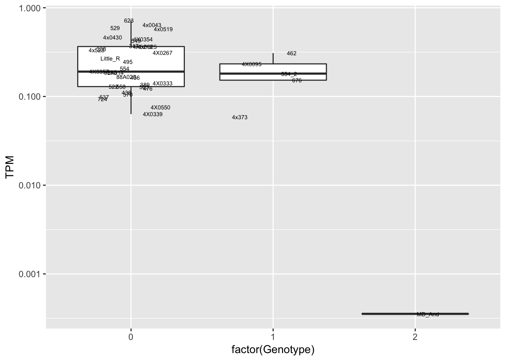
data.frame(Genotype = MergedData$`1:131341766:A:C`,
Phenotype = MergedData$ENSPTRT00000092453.1,
FID=MergedData$FID) %>%
ggplot(aes(x=factor(Genotype), y=Phenotype, label=FID)) +
geom_boxplot(outlier.shape = NA) +
geom_text(position=position_jitter(width=0.25), alpha=1, size=2) +
scale_y_continuous(name="TPM", trans="log10")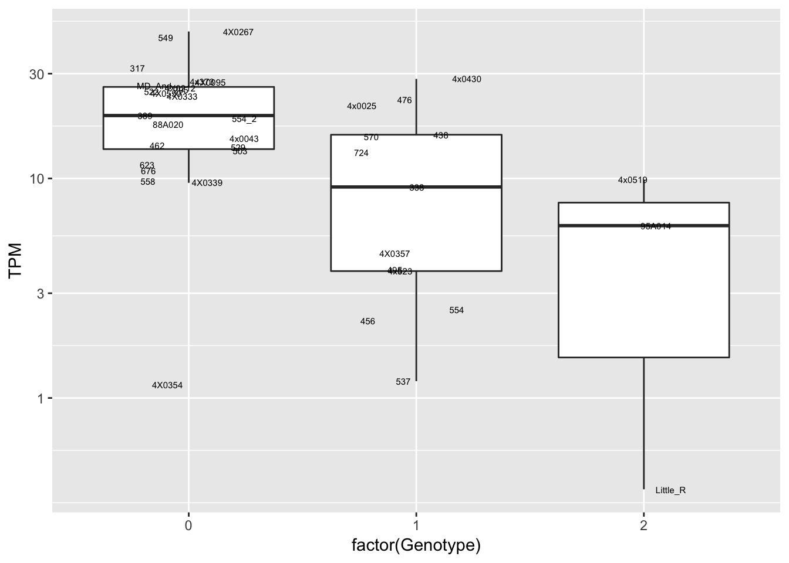
Interpretation: At least the first of the randomly selected eqtls seems reasonable. The others seem to be false positives, often driven by gene expression measurement for the MD_And sample. Perhaps this sample should be discarded completely, or alternatively some filtering for outlier gene expression measurements should be implemented on a gene-by-gene basis. This is not an extreme outlier for gene expression on the first PC plots, so another explanation is that this sample might be an outlier in the sense that it has very low heterozygosity, resulting in false positive calls at the gene-snp pairs for which this is the sole genotype2 (alt-homozygote) and for which this sample is a gene expression outlier.
Considerations for future: apply a hwe filter, check heterozygosity of samples, consider removing expression outliers on gene-by-gene basis and or normalization methods (eg quantile normalization would also dampen this outlier effect).
In the code block below I will choose a P-value filter for filtering genotypes by hwe as implemented with plink --hwe midp. The data comes from a subset of 1M snps (that passed undergone MAF>0.5 and Geno>0.9 filters) and their HWE pvals calculated with plink. I am looking for a threshold that takes care of these false positive calls that have an excess of heterozygotes
hwe.results <- read.table(gzfile('../data/20190416_hwe_tests.uncorrupted.txt.gz'), header=T) %>%
separate(GENO, c("HomA1", "Het", "HomA2"), sep="/", convert=T)
kable(head(hwe.results))| SNP | HomA1 | Het | HomA2 | P |
|---|---|---|---|---|
| 1:81:A:AGT | 0 | 32 | 7 | 0.0000046 |
| 1:116:T:C | 0 | 4 | 35 | 0.5387000 |
| 1:2849:TCAT:GCAC | 1 | 9 | 29 | 0.3495000 |
| 1:2969:G:A | 0 | 18 | 21 | 0.1249000 |
| 1:2991:C:T | 0 | 20 | 19 | 0.0245700 |
| 1:3693:G:C | 1 | 4 | 34 | 0.0973800 |
hist(hwe.results$P)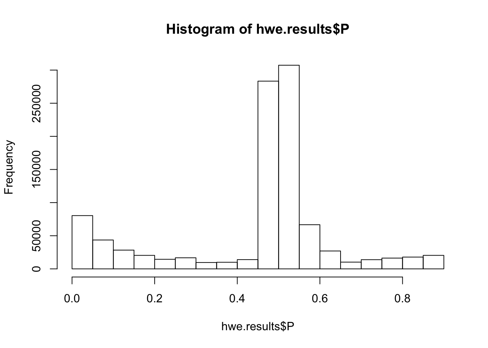
#qqplot of Pvals
qplot(-log10(1:length(hwe.results$P)/length(hwe.results$P)), -log10(sort(hwe.results$P, decreasing = F))) +
geom_abline(intercept = 0, slope = 1)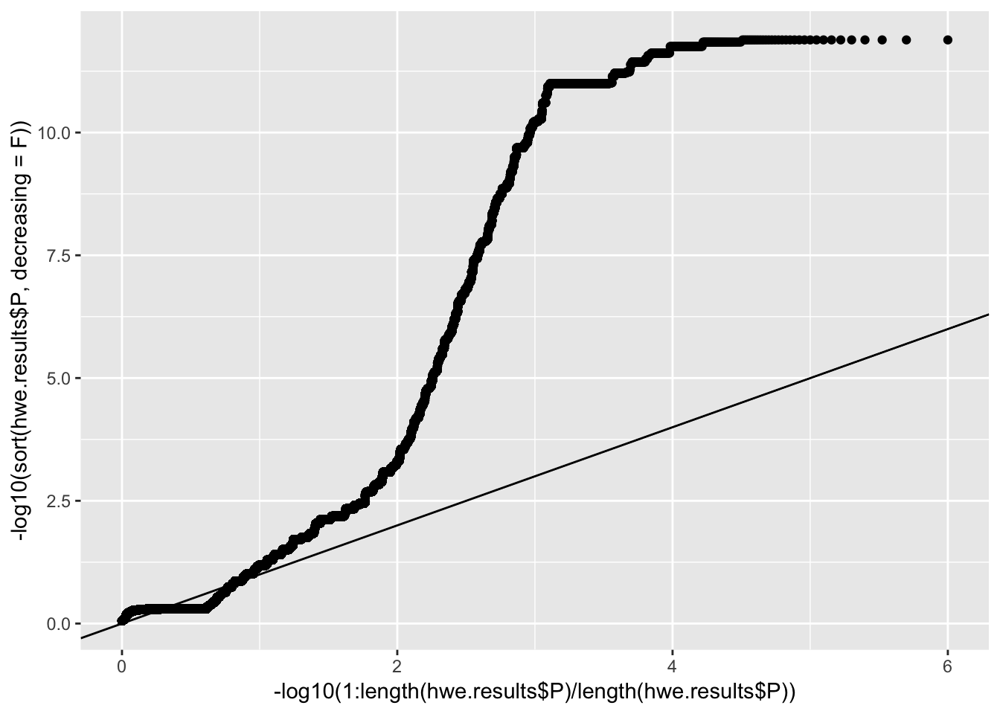
# plot -log10(P) vs num heterozygotes. Plot as hex with log(counts) to see density of points
ggplot(hwe.results, aes(x=Het, y=-log10(P))) +
stat_binhex(aes(fill=log10(..count..))) +
xlab("# heterozygote individuals")Warning: Computation failed in `stat_binhex()`:
Package `hexbin` required for `stat_binhex`.
Please install and try again.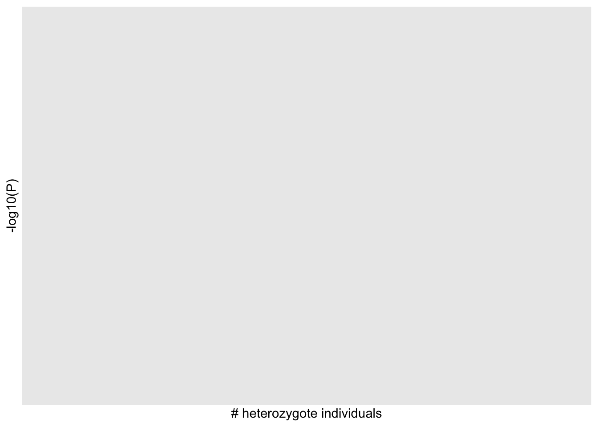
Interpretation: the vast majority of SNPs would pass a HWE filter thresholded at -log10(P)<7.5. There are also a lot of SNPs that would fail this filter because of excess of heterozygotes. Not yet sure if those are genotyping errors or true snps that just don’t obey HWE (as might be expected with the relatedness and population structure in this cohort). Will stick with -log10(P)<7.5 as the threshold. This would filter out those eqtls I suggested were false positives at the beginning of this analysis (-log10(P) is about 10 for those snps).
Below I will check heterozygosity by samples. Used the following plink command: plink --het --maf 0.05 --bfile {MyFile} --geno --hwe 1e-7.5
The F statistic plink uses is: (
heterozygosity <- read.table('../data/20190416_sample.heterozygosity.txt', header=T)
kable(head(heterozygosity))| FID | IID | O.HOM. | E.HOM. | N.NM. | F |
|---|---|---|---|---|---|
| 295 | Pan_troglodytes_ThisStudy | 7947394 | 7569000 | 10277099 | 0.13970 |
| 317 | Pan_troglodytes_ThisStudy | 7663288 | 7569000 | 10276542 | 0.03489 |
| 338 | Pan_troglodytes_ThisStudy | 7921992 | 7569000 | 10277191 | 0.13030 |
| 389 | Pan_troglodytes_ThisStudy | 7991032 | 7569000 | 10276645 | 0.15590 |
| 438 | Pan_troglodytes_ThisStudy | 7855254 | 7569000 | 10277192 | 0.10560 |
| 456 | Pan_troglodytes_ThisStudy | 7970770 | 7569000 | 10277040 | 0.14830 |
ggplot(heterozygosity, aes(x=FID, y=`F`)) +
geom_bar(stat="identity") +
theme(axis.text.x = element_text(angle = 90, hjust = 1, vjust=0.5))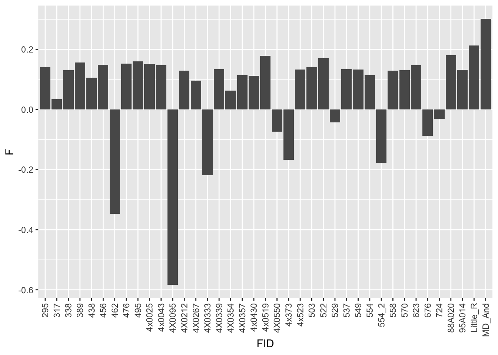
It is the case that MD_And sample has the highest homozygosity, though it’s F-statistic doesn’t stand out. On the basis of this, probably not justified to completely throw the sample out. Will consider phenotype filters on a gene-by-gene basis or quantile normalization to account for outliers that may drive false associations.
sessionInfo()R version 3.5.1 (2018-07-02)
Platform: x86_64-apple-darwin15.6.0 (64-bit)
Running under: macOS 10.14
Matrix products: default
BLAS: /Library/Frameworks/R.framework/Versions/3.5/Resources/lib/libRblas.0.dylib
LAPACK: /Library/Frameworks/R.framework/Versions/3.5/Resources/lib/libRlapack.dylib
locale:
[1] en_US.UTF-8/en_US.UTF-8/en_US.UTF-8/C/en_US.UTF-8/en_US.UTF-8
attached base packages:
[1] stats graphics grDevices utils datasets methods base
other attached packages:
[1] data.table_1.12.0 knitr_1.22 forcats_0.4.0
[4] stringr_1.4.0 dplyr_0.8.0.1 purrr_0.3.2
[7] readr_1.3.1 tidyr_0.8.2 tibble_2.1.1
[10] ggplot2_3.1.0 tidyverse_1.2.1
loaded via a namespace (and not attached):
[1] Rcpp_1.0.1 highr_0.8 cellranger_1.1.0 plyr_1.8.4
[5] pillar_1.3.1 compiler_3.5.1 git2r_0.24.0 workflowr_1.2.0
[9] tools_3.5.1 digest_0.6.18 lubridate_1.7.4 jsonlite_1.6
[13] evaluate_0.13 nlme_3.1-137 gtable_0.3.0 lattice_0.20-38
[17] pkgconfig_2.0.2 rlang_0.3.3 cli_1.1.0 rstudioapi_0.10
[21] yaml_2.2.0 haven_2.1.0 xfun_0.6 withr_2.1.2
[25] xml2_1.2.0 httr_1.4.0 hms_0.4.2 generics_0.0.2
[29] fs_1.2.6 rprojroot_1.3-2 grid_3.5.1 tidyselect_0.2.5
[33] glue_1.3.1 R6_2.4.0 readxl_1.1.0 rmarkdown_1.11
[37] modelr_0.1.4 magrittr_1.5 whisker_0.3-2 backports_1.1.3
[41] scales_1.0.0 htmltools_0.3.6 rvest_0.3.2 assertthat_0.2.1
[45] colorspace_1.4-1 labeling_0.3 stringi_1.4.3 lazyeval_0.2.2
[49] munsell_0.5.0 broom_0.5.1 crayon_1.3.4